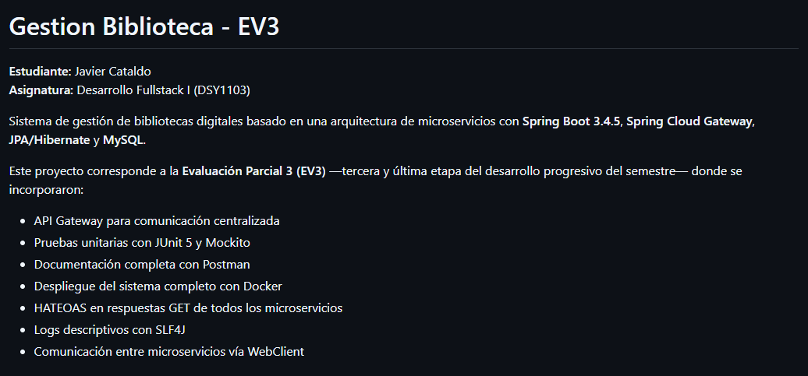

PORTAFOLIO PERSONAL
Hola, soy Javier Cataldo Barrera
Estudiante de Ingeniería en Informática
Estudiante de Ingeniería en Informática con mencion de Ciencia de Datos en DuocUC, interesado en el desarrollo de soluciones y en la construccion de software.
Sobre mí
Actualmente me encuentro cursando el 3er año de Ingeniería en Informática con mencion en Ciencia de Datos en DuocUC. por el momento me encuentro en la busqueda de oportunidades laborales para poder aplicar mis conocimientos y seguir aprendiendo en el mundo del desarrollo de software.
Habilidades
- Programación en Python, Java y
- Base de datos (MySQL, SQL)
- Control de versiones con Git
- Trabajo en equipo y comunicación efectiva
Proyectos
Proyectos realizados durante el desarrollo de la carrera
VETTsafe
Proyecto Semestral realizado en un ramo optativo de GitHub con el Profesor Marcelo Crisostomo. VETTsafe es una aplicación desarrollada en Python para la gestión eficiente de información de mascotas y sus consultas médicas en clínicas veterinarias. Permite registrar, editar y listar datos de clientes y mascotas mediante operaciones CRUD, facilitando la organización interna y el acceso rápido a los registros. En las ramas estan los avances personales de cada integrante del grupo, y en la rama main se encuentra el proyecto final.
Ver rama del proyectoEvaluación 3 - Desarrollo Fullstack

Proyecto grupal desarrollado con Spring Boot, compuesto por múltiples microservicios. Mi aporte se encuentra en la rama "javier" del repositorio del equipo, trabajado mediante control de versiones con Git y GitHub.
Ver rama del proyectoContacto
Si deseas conocer más sobre mi trabajo realizados hasta el dia de hoy, puedes visitar mi perfil en GitHub.
Ver perfil en GitHub